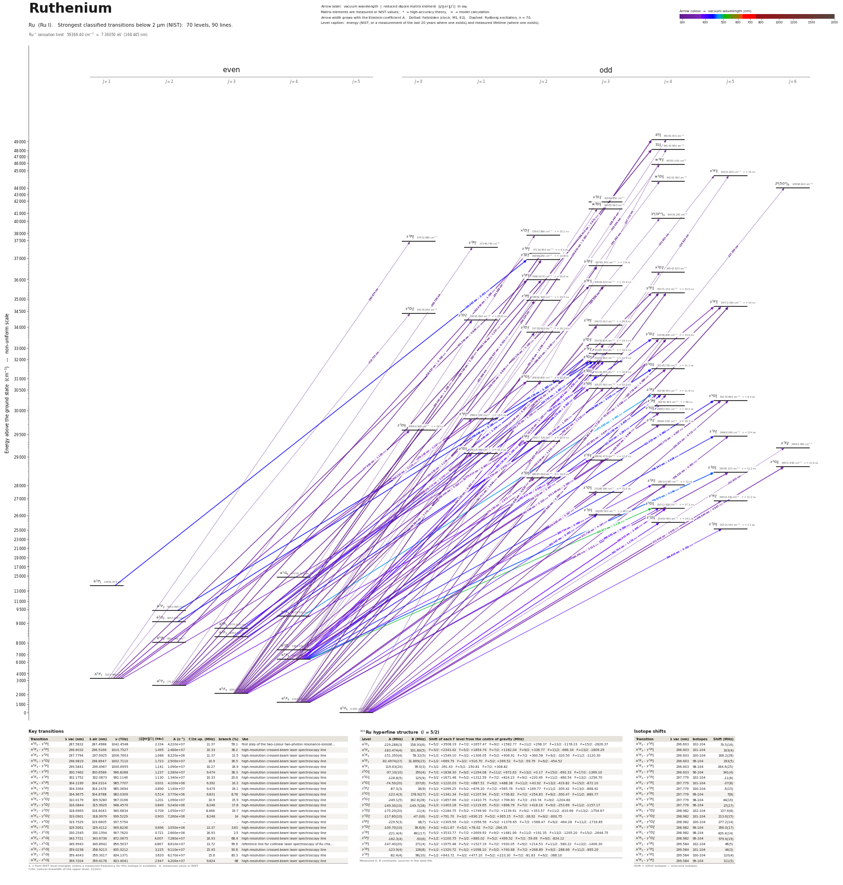

Ruthenium energy level diagram
Energy levels and transitions of neutral ruthenium (Ru I): the 90 strongest classified lines below 2 µm from the NIST Atomic Spectra Database and the 70 levels they connect, each line with its vacuum wavelength, frequency and, for 74 of them, the reduced dipole matrix element derived from the NIST transition rate. Measured lifetimes, transition rates, hyperfine constants and isotope shifts from the literature are included, each with its citation.
Hover a line or a level to isolate it, click to keep it selected. Scroll to zoom, drag to move.

Download: diagram (PDF) diagram (SVG) transitions (CSV) levels (CSV) source code

Key transitions of ruthenium
| Transition | λ vac (nm) | λ air (nm) | ν (THz) | |⟨J‖er‖J′⟩| (ea₀) | A (s⁻¹) | Γ/2π up. (MHz) | branch (%) | Use |
|---|---|---|---|---|---|---|---|---|
| a 5F5 – y 5F°5 | 287.5832 | 287.4988 | 1042.4548 | 2.334 | 4.220e+07 | 11.37 | 59.1 | first step of the two-colour two-photon resonance-ionizat… |
| a 5F3 – y 5F°3 | 296.6032 | 296.5166 | 1010.7527 | 1.495 | 2.480e+07 | 10.33 | 38.2 | high-resolution crossed-beam laser spectroscopy line |
| a 5F4 – y 5F°5 | 297.7794 | 297.6925 | 1006.7603 | 1.086 | 8.220e+06 | 11.37 | 11.5 | high-resolution crossed-beam laser spectroscopy line |
| a 5F5 – y 5D°4 | 298.9819 | 298.8947 | 1002.7110 | 1.723 | 2.500e+07 | 10.9 | 36.5 | high-resolution crossed-beam laser spectroscopy line |
| a 5F3 – y 5F°4 | 299.5841 | 299.4967 | 1000.6955 | 1.141 | 1.090e+07 | 10.27 | 16.9 | high-resolution crossed-beam laser spectroscopy line |
| a 5F2 – y 5F°2 | 300.7462 | 300.6586 | 996.8288 | 1.237 | 2.280e+07 | 9.474 | 38.3 | high-resolution crossed-beam laser spectroscopy line |
| a 5F2 – y 5F°3 | 302.1752 | 302.0873 | 992.1146 | 1.130 | 1.340e+07 | 10.33 | 20.6 | high-resolution crossed-beam laser spectroscopy line |
| a 5F4 – z 5P°3 | 304.1199 | 304.0314 | 985.7707 | 0.631 | 4.100e+06 | 6.392 | 10.2 | high-resolution crossed-beam laser spectroscopy line |
| a 5F1 – y 5F°2 | 304.3364 | 304.2478 | 985.0694 | 0.890 | 1.140e+07 | 9.474 | 19.1 | high-resolution crossed-beam laser spectroscopy line |
| a 5F3 – z 5P°2 | 304.9675 | 304.8788 | 983.0309 | 0.514 | 3.770e+06 | 6.831 | 8.78 | high-resolution crossed-beam laser spectroscopy line |
| a 5F4 – y 5D°4 | 310.0179 | 309.9280 | 967.0166 | 1.201 | 1.090e+07 | 10.9 | 15.9 | high-resolution crossed-beam laser spectroscopy line |
| a 5F3 – y 5D°2 | 316.0844 | 315.9929 | 948.4570 | 0.849 | 9.240e+06 | 8.246 | 17.8 | high-resolution crossed-beam laser spectroscopy line |
| a 5F2 – y 5D°1 | 318.6965 | 318.6043 | 940.6834 | 0.709 | 1.050e+07 | 8.466 | 19.7 | high-resolution crossed-beam laser spectroscopy line |
| a 5F3 – y 5D°3 | 319.0901 | 318.9979 | 939.5229 | 0.903 | 7.260e+06 | 8.246 | 14 | high-resolution crossed-beam laser spectroscopy line |
| a 5F1 – y 5D°0 | 319.7529 | 319.6605 | 937.5754 | – | – | – | – | high-resolution crossed-beam laser spectroscopy line |
| a 5F5 – z 3F°4 | 329.5061 | 329.4112 | 909.8236 | 0.696 | 3.050e+06 | 13.37 | 3.63 | high-resolution crossed-beam laser spectroscopy line |
| a 5F5 – z 5G°5 | 330.2545 | 330.1594 | 907.7620 | 0.721 | 2.660e+06 | 16.93 | 2.5 | high-resolution crossed-beam laser spectroscopy line |
| a 5F4 – z 5G°5 | 343.7721 | 343.6736 | 872.0675 | 4.007 | 7.280e+07 | 16.93 | 68.4 | high-resolution crossed-beam laser spectroscopy line |
| a 5F5 – z 5G°6 | 349.9943 | 349.8942 | 856.5637 | 4.867 | 8.610e+07 | 13.72 | 99.9 | reference line for collinear laser spectroscopy of Ru cha… |
| a 5F1 – z 5G°2 | 359.0238 | 358.9213 | 835.0212 | 3.225 | 9.110e+07 | 15.45 | 93.8 | high-resolution crossed-beam laser spectroscopy line |
| a 5F2 – z 5G°3 | 359.4043 | 359.3017 | 834.1371 | 3.620 | 8.170e+07 | 15.6 | 83.3 | high-resolution crossed-beam laser spectroscopy line |
| a 5F3 – z 3G°4 | 359.7204 | 359.6178 | 833.4041 | 2.947 | 4.200e+07 | 9.824 | 68 | high-resolution crossed-beam laser spectroscopy line |
λ, ν from NIST level energies unless a measured frequency for this isotope is available. A: measured value or NIST. Γ/2π: natural linewidth of the upper level, 1/(2πτ).
101Ru hyperfine structure (I = 5/2)
| Level | A (MHz) | B (MHz) | Shift of each F level from the centre of gravity (MHz) |
|---|---|---|---|
| a 5F5 | -229.288(3) | 158.93(6) | F=5/2: +3508.19 F=7/2: +2657.47 F=9/2: +1582.77 F=11/2: +298.37 F=13/2: -1178.23 F=15/2: -2826.37 |
| a 5F4 | -183.474(4) | 101.80(5) | F=3/2: +2343.42 F=5/2: +1854.74 F=7/2: +1182.04 F=9/2: +336.77 F=11/2: -666.34 F=13/2: -1809.29 |
| a 5F3 | -151.350(4) | 59.32(5) | F=1/2: +1549.10 F=3/2: +1306.05 F=5/2: +906.91 F=7/2: +360.58 F=9/2: -320.50 F=11/2: -1120.30 |
| a 5F2 | -92.4974(27) | 31.869(23) | F=1/2: +669.79 F=3/2: +516.70 F=5/2: +269.52 F=7/2: -59.79 F=9/2: -454.52 |
| a 5F1 | 119.63(20) | 39.0(3) | F=3/2: -391.43 F=5/2: -150.81 F=7/2: +308.82 |
| z 5G°6 | -97.10(10) | 350(4) | F=7/2: +1838.30 F=9/2: +1294.08 F=11/2: +672.63 F=13/2: +0.17 F=15/2: -692.33 F=17/2: -1369.10 |
| z 3G°4 | -128.8(5) | 125(9) | F=3/2: +1671.48 F=5/2: +1312.59 F=7/2: +824.23 F=9/2: +220.49 F=11/2: -480.54 F=13/2: -1256.70 |
| z 5G°5 | -74.50(20) | 237(6) | F=5/2: +1220.03 F=7/2: +887.51 F=9/2: +488.38 F=11/2: +43.92 F=13/2: -419.82 F=15/2: -872.10 |
| z 3F°4 | -87.3(3) | 16(9) | F=3/2: +1099.25 F=5/2: +876.20 F=7/2: +565.76 F=9/2: +169.77 F=11/2: -309.42 F=13/2: -868.92 |
| z 5G°3 | -123.4(3) | 178.9(27) | F=1/2: +1341.34 F=3/2: +1107.94 F=5/2: +736.82 F=7/2: +254.83 F=9/2: -300.47 F=11/2: -880.77 |
| z 5G°2 | -249.1(5) | 162.8(28) | F=1/2: +1857.66 F=3/2: +1410.75 F=5/2: +706.60 F=7/2: -193.74 F=9/2: -1204.80 |
| y 5D°3 | -149.30(10) | -149.7(28) | F=1/2: +1403.18 F=3/2: +1219.65 F=5/2: +898.79 F=7/2: +418.16 F=9/2: -253.69 F=11/2: -1157.17 |
| y 5D°4 | -175.20(20) | -11(4) | F=3/2: +2184.75 F=5/2: +1749.90 F=7/2: +1139.91 F=9/2: +353.57 F=11/2: -610.66 F=13/2: -1754.67 |
| y 5D°2 | -117.80(10) | -47.0(6) | F=1/2: +791.70 F=3/2: +636.15 F=5/2: +365.15 F=7/2: -38.92 F=9/2: -600.75 |
| z 5P°3 | -229.5(3) | 18(7) | F=1/2: +2305.56 F=3/2: +1956.56 F=5/2: +1376.65 F=7/2: +568.47 F=9/2: -464.28 F=11/2: -1716.85 |
| y 5D°1 | -109.70(10) | 39.6(9) | F=3/2: +411.67 F=5/2: +78.02 F=7/2: -264.35 |
| y 5F°5 | -221.4(4) | 491(17) | F=5/2: +3533.77 F=7/2: +2609.93 F=9/2: +1481.06 F=11/2: +191.35 F=13/2: -1205.20 F=15/2: -2644.75 |
| z 5P°2 | -162.3(4) | -50(6) | F=1/2: +1100.75 F=3/2: +880.02 F=5/2: +499.52 F=7/2: -59.69 F=9/2: -824.12 |
| y 5F°4 | -147.40(20) | 271(4) | F=3/2: +1975.48 F=5/2: +1527.19 F=7/2: +930.05 F=9/2: +214.53 F=11/2: -580.22 F=13/2: -1406.30 |
| y 5F°3 | -123.9(4) | 136(8) | F=1/2: +1320.72 F=3/2: +1098.10 F=5/2: +740.68 F=7/2: +268.89 F=9/2: -288.66 F=11/2: -895.20 |
| y 5F°2 | -82.4(4) | 96(10) | F=1/2: +643.72 F=3/2: +477.10 F=5/2: +223.30 F=7/2: -81.83 F=9/2: -388.10 |
Measured A, B constants; sources in the data file.
Isotope shifts
| Transition | λ vac (nm) | Isotopes | Shift (MHz) |
|---|---|---|---|
| a 5F3 – y 5F°3 | 296.603 | 102-104 | 79.5(16) |
| a 5F3 – y 5F°3 | 296.603 | 101-104 | 103(4) |
| a 5F3 – y 5F°3 | 296.603 | 100-104 | 168.2(28) |
| a 5F3 – y 5F°3 | 296.603 | 99-104 | 193(5) |
| a 5F3 – y 5F°3 | 296.603 | 98-104 | 264.6(25) |
| a 5F3 – y 5F°3 | 296.603 | 96-104 | 341(4) |
| a 5F4 – y 5F°5 | 297.779 | 102-104 | -11(8) |
| a 5F4 – y 5F°5 | 297.779 | 101-104 | -37(8) |
| a 5F4 – y 5F°5 | 297.779 | 100-104 | -5(15) |
| a 5F4 – y 5F°5 | 297.779 | 99-104 | 7(8) |
| a 5F4 – y 5F°5 | 297.779 | 98-104 | 44(16) |
| a 5F4 – y 5F°5 | 297.779 | 96-104 | 27(27) |
| a 5F5 – y 5D°4 | 298.982 | 102-104 | 137.6(8) |
| a 5F5 – y 5D°4 | 298.982 | 101-104 | 213.6(15) |
| a 5F5 – y 5D°4 | 298.982 | 100-104 | 277.2(14) |
| a 5F5 – y 5D°4 | 298.982 | 99-104 | 356.0(17) |
| a 5F5 – y 5D°4 | 298.982 | 98-104 | 426.4(14) |
| a 5F5 – y 5D°4 | 298.982 | 96-104 | 579.6(19) |
| a 5F3 – y 5F°4 | 299.584 | 102-104 | 46(5) |
| a 5F3 – y 5F°4 | 299.584 | 101-104 | 44(3) |
| a 5F3 – y 5F°4 | 299.584 | 100-104 | 110(4) |
| a 5F3 – y 5F°4 | 299.584 | 99-104 | 111(5) |
Shift = ν(first isotope) − ν(second isotope).
Listed Ru transitions below 2 µm
| Lower level | Upper level | λ vacuum (nm) | λ air (nm) | ν (THz) | Type | |⟨J‖er‖J′⟩| (ea₀) | A (s⁻¹) | Branching (%) | Source of matrix element / A |
|---|---|---|---|---|---|---|---|---|---|
| a 5F5 | 31°4 | 207.7103 | 207.6441 | 1443.3202 | E1 | – | – | – | – |
| a 5F4 | 47°4 | 208.4445 | 208.3781 | 1438.2366 | E1 | – | – | – | – |
| a 5F5 | x 5F°5 | 225.6226 | 225.5527 | 1328.7344 | E1 | – | – | – | – |
| a 5F5 | 2°(5G°)6 | 227.2800 | 227.2097 | 1319.0448 | E1 | – | – | – | – |
| a 5F4 | x 5F°5 | 231.8509 | 231.7797 | 1293.0400 | E1 | – | – | – | – |
| a 3F4 | 47°4 | 234.6315 | 234.5597 | 1277.7161 | E1 | 2.501 measured | 1.090e+08 measured | – | Yu, Sun, Xu, Zhang, Jiang, Svanberg, Dai, J. Phys. B 44, 215002 (2011), log gf as transcr… |
| a 3F4 | w 3F°4 | 255.0336 | 254.9571 | 1175.5018 | E1 | – | – | – | – |
| a 3F4 | w 5D°4 | 265.2628 | 265.1839 | 1130.1714 | E1 (intercombination) | – | – | – | – |
| a 5F5 | x 5D°4 | 273.6531 | 273.5721 | 1095.5202 | E1 | – | – | – | – |
| a 5F3 | x 5D°2 | 281.0858 | 281.0031 | 1066.5512 | E1 | – | – | – | – |
| a 5F4 | y 3D°3 | 281.1382 | 281.0554 | 1066.3528 | E1 (intercombination) | 2.256 measured | 6.630e+07 measured | 51.7 | Wickliffe, Salih, Lawler, J. Quant. Spectrosc. Radiat. Transfer 51, 545 (1994), log gf as… |
| a 5F5 | y 5F°4 | 281.9192 | 281.8363 | 1063.3983 | E1 | 0.820 measured | 6.760e+06 measured | 10.5 | Wickliffe, Salih, Lawler, J. Quant. Spectrosc. Radiat. Transfer 51, 545 (1994), log gf as… |
| a 3F4 | v 3D°3 | 282.9990 | 282.9157 | 1059.3412 | E1 | – | – | – | – |
| a 5F3 | z 3P°2 | 285.4911 | 285.4073 | 1050.0938 | E1 (intercombination) | 1.338 measured | 3.120e+07 measured | 29.6 | Wickliffe, Salih, Lawler, J. Quant. Spectrosc. Radiat. Transfer 51, 545 (1994), log gf as… |
| a 3F4 | w 3D°3 | 286.2243 | 286.1403 | 1047.4038 | E1 | – | – | – | – |
| a 5F3 | y 3D°2 | 286.7487 | 286.6645 | 1045.4884 | E1 (intercombination) | 1.182 measured | 2.400e+07 measured | 33.1 | Wickliffe, Salih, Lawler, J. Quant. Spectrosc. Radiat. Transfer 51, 545 (1994), log gf as… |
| a 5F5 | y 5F°5 | 287.5832 | 287.4988 | 1042.4548 | E1 | 2.334 measured | 4.220e+07 measured | 59.1 | Wickliffe, Salih, Lawler, J. Quant. Spectrosc. Radiat. Transfer 51, 545 (1994), log gf as… |
| a 5F2 | z 3P°1 | 288.7378 | 288.6531 | 1038.2862 | E1 (intercombination) | – | – | – | – |
| a 5F1 | z 3P°0 | 290.9735 | 290.8883 | 1030.3084 | E1 (intercombination) | – | – | – | – |
| a 5F4 | y 5F°4 | 291.7109 | 291.6256 | 1027.7038 | E1 | 1.644 measured | 2.450e+07 measured | 38 | Wickliffe, Salih, Lawler, J. Quant. Spectrosc. Radiat. Transfer 51, 545 (1994), log gf as… |
| a 3F4 | 1°(3F°)4 | 295.0356 | 294.9493 | 1016.1232 | E1 | – | – | – | – |
| a 5F3 | y 5F°3 | 296.6032 | 296.5166 | 1010.7527 | E1 | 1.495 measured | 2.480e+07 measured | 38.2 | Wickliffe, Salih, Lawler, J. Quant. Spectrosc. Radiat. Transfer 51, 545 (1994), log gf as… |
| a 5F4 | y 5F°5 | 297.7794 | 297.6925 | 1006.7603 | E1 | 1.086 measured | 8.220e+06 measured | 11.5 | Wickliffe, Salih, Lawler, J. Quant. Spectrosc. Radiat. Transfer 51, 545 (1994), log gf as… |
| a 5F5 | y 5D°4 | 298.9819 | 298.8947 | 1002.7110 | E1 | 1.723 measured | 2.500e+07 measured | 36.5 | Wickliffe, Salih, Lawler, J. Quant. Spectrosc. Radiat. Transfer 51, 545 (1994), log gf as… |
| a 1G4 | 31°4 | 299.0103 | 298.9231 | 1002.6157 | E1 | 2.671 measured | 6.010e+07 measured | – | Yu, Sun, Xu, Zhang, Jiang, Svanberg, Dai, J. Phys. B 44, 215002 (2011), log gf as transcr… |
| a 5F3 | y 5F°4 | 299.5841 | 299.4967 | 1000.6955 | E1 | 1.141 measured | 1.090e+07 measured | 16.9 | Wickliffe, Salih, Lawler, J. Quant. Spectrosc. Radiat. Transfer 51, 545 (1994), log gf as… |
| a 5F2 | y 5F°2 | 300.7462 | 300.6586 | 996.8288 | E1 | 1.237 measured | 2.280e+07 measured | 38.3 | Wickliffe, Salih, Lawler, J. Quant. Spectrosc. Radiat. Transfer 51, 545 (1994), log gf as… |
| a 5F2 | y 5F°3 | 302.1752 | 302.0873 | 992.1146 | E1 | 1.130 measured | 1.340e+07 measured | 20.6 | Wickliffe, Salih, Lawler, J. Quant. Spectrosc. Radiat. Transfer 51, 545 (1994), log gf as… |
| a 5F4 | z 5P°3 | 304.1199 | 304.0314 | 985.7707 | E1 | 0.631 measured | 4.100e+06 measured | 10.2 | Wickliffe, Salih, Lawler, J. Quant. Spectrosc. Radiat. Transfer 51, 545 (1994), log gf as… |
| a 5F1 | y 5F°2 | 304.3364 | 304.2478 | 985.0694 | E1 | 0.890 measured | 1.140e+07 measured | 19.1 | Wickliffe, Salih, Lawler, J. Quant. Spectrosc. Radiat. Transfer 51, 545 (1994), log gf as… |
| a 5F3 | z 5P°2 | 304.9675 | 304.8788 | 983.0309 | E1 | 0.514 measured | 3.770e+06 measured | 8.78 | Wickliffe, Salih, Lawler, J. Quant. Spectrosc. Radiat. Transfer 51, 545 (1994), log gf as… |
| a 5F4 | y 5D°4 | 310.0179 | 309.9280 | 967.0166 | E1 | 1.201 measured | 1.090e+07 measured | 15.9 | Wickliffe, Salih, Lawler, J. Quant. Spectrosc. Radiat. Transfer 51, 545 (1994), log gf as… |
| a 5F4 | y 5D°3 | 310.1736 | 310.0836 | 966.5312 | E1 | 1.135 measured | 1.250e+07 measured | 24.1 | Wickliffe, Salih, Lawler, J. Quant. Spectrosc. Radiat. Transfer 51, 545 (1994), log gf as… |
| a 5F3 | y 5D°2 | 316.0844 | 315.9929 | 948.4570 | E1 | 0.849 measured | 9.240e+06 measured | 17.8 | Wickliffe, Salih, Lawler, J. Quant. Spectrosc. Radiat. Transfer 51, 545 (1994), log gf as… |
| a 5F2 | y 5D°1 | 318.6965 | 318.6043 | 940.6834 | E1 | 0.709 measured | 1.050e+07 measured | 19.7 | Wickliffe, Salih, Lawler, J. Quant. Spectrosc. Radiat. Transfer 51, 545 (1994), log gf as… |
| a 5F3 | y 5D°3 | 319.0901 | 318.9979 | 939.5229 | E1 | 0.903 measured | 7.260e+06 measured | 14 | Wickliffe, Salih, Lawler, J. Quant. Spectrosc. Radiat. Transfer 51, 545 (1994), log gf as… |
| a 5F1 | y 5D°0 | 319.7529 | 319.6605 | 937.5754 | E1 | – | – | – | – |
| a 5F5 | z 3F°4 | 329.5061 | 329.4112 | 909.8236 | E1 (intercombination) | 0.696 measured | 3.050e+06 measured | 3.63 | Wickliffe, Salih, Lawler, J. Quant. Spectrosc. Radiat. Transfer 51, 545 (1994), log gf as… |
| a 5F5 | z 5G°5 | 330.2545 | 330.1594 | 907.7620 | E1 | 0.721 measured | 2.660e+06 measured | 2.5 | Wickliffe, Salih, Lawler, J. Quant. Spectrosc. Radiat. Transfer 51, 545 (1994), log gf as… |
| a 5F2 | z 3F°3 | 336.9419 | 336.8451 | 889.7453 | E1 (intercombination) | 0.971 measured | 7.140e+06 measured | 7.43 | Wickliffe, Salih, Lawler, J. Quant. Spectrosc. Radiat. Transfer 51, 545 (1994), log gf as… |
| a 5F5 | z 7F°5 | 339.3507 | 339.2533 | 883.4296 | E1 (intercombination) | 0.651 measured | 2.000e+06 measured | 26.8 | Wickliffe, Salih, Lawler, J. Quant. Spectrosc. Radiat. Transfer 51, 545 (1994), log gf as… |
| a 5F3 | z 5G°4 | 341.8307 | 341.7327 | 877.0204 | E1 | 2.488 measured | 3.490e+07 measured | 38.7 | Wickliffe, Salih, Lawler, J. Quant. Spectrosc. Radiat. Transfer 51, 545 (1994), log gf as… |
| a 5F5 | z 7F°6 | 342.9301 | 342.8318 | 874.2086 | E1 (intercombination) | – | – | – | – |
| a 5F2 | z 3G°3 | 343.1749 | 343.0765 | 873.5850 | E1 (intercombination) | 1.100 measured | 8.670e+06 measured | 10.3 | Wickliffe, Salih, Lawler, J. Quant. Spectrosc. Radiat. Transfer 51, 545 (1994), log gf as… |
| a 5F4 | z 5G°5 | 343.7721 | 343.6736 | 872.0675 | E1 | 4.007 NIST | 7.280e+07 NIST | 68.4 | NIST ASD (accuracy n/a) |
| a 5P2 | z 3P°2 | 343.9356 | 343.8370 | 871.6529 | E1 (intercombination) | 1.388 measured | 1.920e+07 measured | 18.2 | Wickliffe, Salih, Lawler, J. Quant. Spectrosc. Radiat. Transfer 51, 545 (1994), log gf as… |
| a 5F5 | z 5G°6 | 349.9943 | 349.8942 | 856.5637 | E1 | 4.867 NIST | 8.610e+07 NIST | 99.9 | NIST ASD (accuracy n/a) |
| a 5F3 | z 5G°3 | 351.5492 | 351.4487 | 852.7752 | E1 | 1.076 measured | 7.710e+06 measured | 7.86 | Wickliffe, Salih, Lawler, J. Quant. Spectrosc. Radiat. Transfer 51, 545 (1994), log gf as… |
| a 5F3 | z 3F°4 | 353.8957 | 353.7946 | 847.1209 | E1 (intercombination) | 0.897 measured | 4.090e+06 measured | 4.87 | Wickliffe, Salih, Lawler, J. Quant. Spectrosc. Radiat. Transfer 51, 545 (1994), log gf as… |
| a 5F2 | z 5G°2 | 354.0379 | 353.9368 | 846.7806 | E1 | 1.238 measured | 1.400e+07 measured | 14.4 | Wickliffe, Salih, Lawler, J. Quant. Spectrosc. Radiat. Transfer 51, 545 (1994), log gf as… |
| a 5F1 | z 5G°2 | 359.0238 | 358.9213 | 835.0212 | E1 | 3.225 NIST | 9.110e+07 NIST | 93.8 | NIST ASD (accuracy n/a) |
| a 5F2 | z 5G°3 | 359.4043 | 359.3017 | 834.1371 | E1 | 3.620 NIST | 8.170e+07 NIST | 83.3 | NIST ASD (accuracy n/a) |
| a 5F3 | z 3G°4 | 359.7204 | 359.6178 | 833.4041 | E1 (intercombination) | 2.947 NIST | 4.200e+07 NIST | 68 | NIST ASD (accuracy n/a) |
| a 5F3 | z 7F°4 | 363.5964 | 363.4928 | 824.5198 | E1 (intercombination) | 2.310 measured | 2.500e+07 measured | 73.2 | Wickliffe, Salih, Lawler, J. Quant. Spectrosc. Radiat. Transfer 51, 545 (1994), log gf as… |
| a 5F4 | z 3G°5 | 366.2405 | 366.1362 | 818.5671 | E1 (intercombination) | 3.315 measured | 4.120e+07 measured | 50.3 | Wickliffe, Salih, Lawler, J. Quant. Spectrosc. Radiat. Transfer 51, 545 (1994), log gf as… |
| a 5D4 | y 5F°5 | 366.4416 | 366.3372 | 818.1180 | E1 | 2.118 measured | 1.680e+07 measured | 23.5 | Wickliffe, Salih, Lawler, J. Quant. Spectrosc. Radiat. Transfer 51, 545 (1994), log gf as… |
| a 5F4 | z 5F°4 | 372.7984 | 372.6924 | 804.1678 | E1 | 4.163 NIST | 7.530e+07 NIST | 90.4 | NIST ASD (accuracy n/a) |
| a 5F5 | z 5F°5 | 372.9085 | 372.8025 | 803.9303 | E1 | 4.805 NIST | 8.200e+07 NIST | 91.8 | NIST ASD (accuracy n/a) |
| a 5F3 | z 5F°3 | 373.1492 | 373.0431 | 803.4117 | E1 | 3.560 NIST | 7.060e+07 NIST | 86.1 | NIST ASD (accuracy n/a) |
| a 5F2 | z 5F°2 | 374.3344 | 374.2280 | 800.8680 | E1 | 2.853 measured | 6.290e+07 measured | 78.6 | Wickliffe, Salih, Lawler, J. Quant. Spectrosc. Radiat. Transfer 51, 545 (1994), log gf as… |
| a 5F1 | z 5F°1 | 376.1084 | 376.0015 | 797.0906 | E1 | 2.297 measured | 6.700e+07 measured | 87.8 | Wickliffe, Salih, Lawler, J. Quant. Spectrosc. Radiat. Transfer 51, 545 (1994), log gf as… |
| a 5F1 | z 5D°0 | 377.8660 | 377.7587 | 793.3831 | E1 | 1.168 measured | 5.120e+07 measured | 81.9 | Wickliffe, Salih, Lawler, J. Quant. Spectrosc. Radiat. Transfer 51, 545 (1994), log gf as… |
| a 5F2 | z 5D°1 | 378.7126 | 378.6050 | 791.6095 | E1 | 2.202 measured | 6.030e+07 measured | 85.6 | Wickliffe, Salih, Lawler, J. Quant. Spectrosc. Radiat. Transfer 51, 545 (1994), log gf as… |
| a 5F3 | z 5D°2 | 379.1591 | 379.0515 | 790.6771 | E1 | 2.872 measured | 6.130e+07 measured | 87.7 | Wickliffe, Salih, Lawler, J. Quant. Spectrosc. Radiat. Transfer 51, 545 (1994), log gf as… |
| a 5F1 | z 5F°2 | 379.9128 | 379.8050 | 789.1086 | E1 | 0.963 measured | 6.850e+06 measured | 8.56 | Wickliffe, Salih, Lawler, J. Quant. Spectrosc. Radiat. Transfer 51, 545 (1994), log gf as… |
| a 5F4 | z 5D°3 | 379.9977 | 379.8898 | 788.9323 | E1 | 3.367 NIST | 5.980e+07 NIST | 90.9 | NIST ASD (accuracy n/a) |
| a 5F5 | z 5D°4 | 380.0427 | 379.9349 | 788.8388 | E1 | 3.605 NIST | 5.330e+07 NIST | 92.2 | NIST ASD (accuracy n/a) |
| a 5F2 | z 5F°3 | 382.0114 | 381.9030 | 784.7736 | E1 | 0.860 measured | 3.840e+06 measured | 4.68 | Wickliffe, Salih, Lawler, J. Quant. Spectrosc. Radiat. Transfer 51, 545 (1994), log gf as… |
| a 5F3 | z 5F°4 | 385.7541 | 385.6447 | 777.1595 | E1 | 0.598 measured | 1.400e+06 measured | 1.68 | Wickliffe, Salih, Lawler, J. Quant. Spectrosc. Radiat. Transfer 51, 545 (1994), log gf as… |
| a 3F4 | z 3F°3 | 386.8933 | 386.7836 | 774.8712 | E1 | 1.650 measured | 1.360e+07 measured | 14.1 | Wickliffe, Salih, Lawler, J. Quant. Spectrosc. Radiat. Transfer 51, 545 (1994), log gf as… |
| a 5F5 | z 7D°4 | 392.7037 | 392.5926 | 763.4062 | E1 (intercombination) | 1.276 measured | 6.050e+06 measured | 85.3 | Wickliffe, Salih, Lawler, J. Quant. Spectrosc. Radiat. Transfer 51, 545 (1994), log gf as… |
| a 3F4 | z 3G°3 | 395.1340 | 395.0222 | 758.7109 | E1 | 1.140 measured | 6.100e+06 measured | 7.26 | Wickliffe, Salih, Lawler, J. Quant. Spectrosc. Radiat. Transfer 51, 545 (1994), log gf as… |
| a 5F5 | z 7D°5 | 396.6025 | 396.4904 | 755.9015 | E1 (intercombination) | 0.401 measured | 4.740e+05 measured | 99.5 | Wickliffe, Salih, Lawler, J. Quant. Spectrosc. Radiat. Transfer 51, 545 (1994), log gf as… |
| a 5F4 | z 5D°4 | 398.0545 | 397.9419 | 753.1443 | E1 | 0.580 measured | 1.200e+06 measured | 2.08 | Wickliffe, Salih, Lawler, J. Quant. Spectrosc. Radiat. Transfer 51, 545 (1994), log gf as… |
| a 5F4 | z 7D°3 | 402.4968 | 402.3830 | 744.8320 | E1 (intercombination) | 0.453 measured | 9.110e+05 measured | 82.1 | Wickliffe, Salih, Lawler, J. Quant. Spectrosc. Radiat. Transfer 51, 545 (1994), log gf as… |
| a 5P3 | y 5D°4 | 405.2535 | 405.1391 | 739.7652 | E1 | 2.229 measured | 1.680e+07 measured | 24.5 | Wickliffe, Salih, Lawler, J. Quant. Spectrosc. Radiat. Transfer 51, 545 (1994), log gf as… |
| a 3F4 | z 3D°3 | 408.1746 | 408.0594 | 734.4711 | E1 | 3.502 measured | 5.220e+07 measured | 56.9 | Wickliffe, Salih, Lawler, J. Quant. Spectrosc. Radiat. Transfer 51, 545 (1994), log gf as… |
| a 3F3 | z 3F°3 | 411.3901 | 411.2740 | 728.7304 | E1 | 2.378 measured | 2.350e+07 measured | 24.4 | Wickliffe, Salih, Lawler, J. Quant. Spectrosc. Radiat. Transfer 51, 545 (1994), log gf as… |
| a 3F4 | z 3F°4 | 420.1077 | 419.9894 | 713.6086 | E1 | 3.625 NIST | 3.990e+07 NIST | 47.5 | NIST ASD (accuracy n/a) |
| a 3F3 | z 3G°3 | 420.7200 | 420.6015 | 712.5701 | E1 | 1.997 measured | 1.550e+07 measured | 18.4 | Wickliffe, Salih, Lawler, J. Quant. Spectrosc. Radiat. Transfer 51, 545 (1994), log gf as… |
| a 3F4 | z 5G°5 | 421.3249 | 421.2063 | 711.5469 | E1 (intercombination) | 2.962 measured | 2.160e+07 measured | 20.3 | Wickliffe, Salih, Lawler, J. Quant. Spectrosc. Radiat. Transfer 51, 545 (1994), log gf as… |
| a 3F4 | z 7P°4 | 421.8453 | 421.7266 | 710.6691 | E1 (intercombination) | 1.293 measured | 5.010e+06 measured | 49.6 | Wickliffe, Salih, Lawler, J. Quant. Spectrosc. Radiat. Transfer 51, 545 (1994), log gf as… |
| a 3F3 | z 5G°4 | 429.8917 | 429.7708 | 697.3673 | E1 (intercombination) | 3.433 measured | 3.340e+07 measured | 37.1 | Wickliffe, Salih, Lawler, J. Quant. Spectrosc. Radiat. Transfer 51, 545 (1994), log gf as… |
| b 3P1 | y 3D°2 | 435.0927 | 434.9704 | 689.0313 | E1 | 2.011 measured | 1.990e+07 measured | 27.5 | Wickliffe, Salih, Lawler, J. Quant. Spectrosc. Radiat. Transfer 51, 545 (1994), log gf as… |
| a 3F4 | z 7F°5 | 436.2429 | 436.1203 | 687.2146 | E1 (intercombination) | 1.329 measured | 3.920e+06 measured | 52.5 | Wickliffe, Salih, Lawler, J. Quant. Spectrosc. Radiat. Transfer 51, 545 (1994), log gf as… |
| a 5D2 | z 3G°3 | 438.6877 | 438.5645 | 683.3847 | E1 (intercombination) | 2.160 measured | 1.600e+07 measured | 19 | Wickliffe, Salih, Lawler, J. Quant. Spectrosc. Radiat. Transfer 51, 545 (1994), log gf as… |
| a 3F2 | z 3G°3 | 441.1264 | 441.0025 | 679.6067 | E1 | 2.380 measured | 1.910e+07 measured | 22.7 | Wickliffe, Salih, Lawler, J. Quant. Spectrosc. Radiat. Transfer 51, 545 (1994), log gf as… |
| a 3F4 | z 3G°5 | 455.5794 | 455.4517 | 658.0465 | E1 | 4.196 measured | 3.430e+07 measured | 41.9 | Wickliffe, Salih, Lawler, J. Quant. Spectrosc. Radiat. Transfer 51, 545 (1994), log gf as… |
| b 3F4 | z 3F°4 | 471.0799 | 470.9482 | 636.3940 | E1 | 2.691 measured | 1.560e+07 measured | 18.6 | Wickliffe, Salih, Lawler, J. Quant. Spectrosc. Radiat. Transfer 51, 545 (1994), log gf as… |
| a 3F4 | z 5D°4 | 505.8732 | 505.7322 | 592.6237 | E1 (intercombination) | 1.125 measured | 2.200e+06 measured | 3.81 | Wickliffe, Salih, Lawler, J. Quant. Spectrosc. Radiat. Transfer 51, 545 (1994), log gf as… |
Reduced dipole matrix elements follow the convention A = ω³|d|²/(3πε₀ħc³(2J′+1)), with J′ the upper level. Tags show where a number comes from: measured, NIST compilation, high-accuracy theory, or a model calculation.
Ru energy levels
Ru⁺ ionisation limit 59366.40 cm⁻¹ = 7.36050 eV (168.445 nm)
Sources
- Biemont, Grevesse, Kwiatkowski, Zimmermann, Astron. Astrophys. 131, 364 (1984), Table 1. …
- Buettgenbach, Herschel, Meisel, Schroedl, Witte, Childs, Z. Phys. 269, 189 (1974) (atomic…
- Fivet, Quinet, Palmeri, Biemont, et al., MNRAS 396, 2124 (2009), Table 1
- NIST ASD
- NIST ASD level energies
- Powis, "Crossed-beam laser spectroscopy of atomic ruthenium", PhD thesis, University of B…
- Salih & Lawler, J. Opt. Soc. Am. B 2, 422 (1985), as tabulated in Fivet, Quinet, Palmeri,…
- Wickliffe, Salih, Lawler, J. Quant. Spectrosc. Radiat. Transfer 51, 545 (1994), log gf as…
- Yu, Sun, Xu, Zhang, Jiang, Svanberg, Dai, J. Phys. B 44, 215002 (2011), log gf as transcr…
Isotope shifts are nu(first) - nu(second). Powis values are stored as "A-104"; Maass values as successive pairs and, for radioactive isotopes, as "A-102". Hyperfine constants of the ground multiplet a5F5-2 are atomic-beam magnetic-resonance values of Buettgenbach et al. 1974 read second-hand in the Powis thesis. Lifetime columns of Fivet et al. Table 1 were obtained through a text rendering of the publisher page (two independent readings gave identical numbers); the Biemont et al. 1984 numbers were verified on the scanned original. A_s values are derived (not read): A = 0.667025 sigma^2 gf / g_upper with sigma from the NIST level energies and log gf from Wickliffe, Salih, Lawler 1994 (branching fractions normalised to laser-induced-fluorescence lifetimes) or Yu et al. 2011, both read second-hand in the Kurucz laboratory line files; log gf is given to 0.01 dex (2.3 %) and the original uncertainties were not available. The same conversion reproduces the 11 Ru I A values that NIST ASD carries from Wickliffe et al. to within 1 %; those 11 lines are not repeated here. Only lines with at least one drawn level are included. Powis isotope shifts are printed as "relative to 104Ru" and are positive for the lighter isotopes, i.e. nu(A) - nu(104); uncertainties are standard errors of repeat scans; Table C.3 values come from narrow, heavily blended spectra. nuclear_moments is an extra top-level block (not in the schema).
Atoms with measured data
- Lithium-632 levels, 85 lines
- Lithium-732 levels, 85 lines
- Beryllium-917 levels, 26 lines
- Sodium-2336 levels, 106 lines
- Magnesium-2418 levels, 61 lines
- Magnesium-2518 levels, 61 lines
- Potassium-3934 levels, 84 lines
- Potassium-4034 levels, 84 lines
- Potassium-4134 levels, 84 lines
- Calcium-4035 levels, 61 lines
- Calcium-4335 levels, 61 lines
- Rubidium-8536 levels, 94 lines
- Rubidium-8736 levels, 94 lines
- Strontium-8740 levels, 70 lines
- Strontium-8840 levels, 70 lines
- Caesium-13331 levels, 79 lines
- Barium-13744 levels, 89 lines
- Barium-13844 levels, 89 lines
- Dysprosium-16339 levels, 55 lines
- Dysprosium-16439 levels, 55 lines
- Ytterbium-17118 levels, 26 lines
- Ytterbium-17418 levels, 26 lines